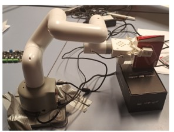
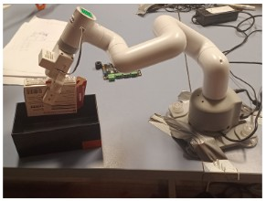

ROS‑Based Control of myCobot 6DOF Robot Arm
1. Results and Discussion
The experiment consists of three automated robot poses: Home, Pick, and Place. Each pose is executed through a single ROS command or keyboard input.
1.1 Home Pose
When the launch file is executed, all joint angles reset to zero and the robot automatically moves to the Home position. From any pose, pressing the 7 key returns the robot to the home pose.

Figure: Home Pose of myCobot
1.2 Pick Pose
The Pick pose positions the robot for grasping. From either the Home or Place pose, pressing the 5 key moves all joints to the Pick configuration.

Figure: Pick Pose of myCobot
1.3 Place Pose
The Place pose positions the robot to deposit an object. From the Pick pose, pressing the 6 key transitions the robot to the Place pose.

Figure: Place Pose of myCobot
2. Forward Kinematic Analysis
Forward kinematics were computed using the Denavit–Hartenberg (D‑H) convention. Using the Home pose as the reference, each pose was analyzed based on changes in joint angles. A ±7 error margin was considered in the final results.
Figure: Home Pose with Reference Frames and Link Lengths
2.1 D‑H Parameters for Home Pose
| Link | aᵢ | αᵢ | dᵢ | θᵢ |
|---|---|---|---|---|
| 1 | 0 | 1.5708 | 131 | 0 |
| 2 | -110.4 | 0 | 0 | 0 |
| 3 | -96 | 0 | 0 | 0 |
| 4 | 0 | 1.5708 | 63.64 | 0 |
| 5 | 0 | -1.5708 | 75.05 | 0 |
| 6 | 0 | 0 | 45.6 | 0 |
Home Pose Transformation Matrix:
[ 1.971 0.7071 0 128 ]
[ 1.1228 -0.1228 0.0848 52 ]
[ 1.6964 -0.6964 -0.1736 25.37 ]
[ 1 0 0 1 ]
2.2 D‑H Parameters for Pick Pose
| Link | aᵢ | αᵢ | dᵢ | θᵢ |
|---|---|---|---|---|
| 1 | 0 | 0 | 90 | 0 |
| 2 | 0 | 0 | 90 | 30 |
| 3 | 0 | 0 | 90 | 60 |
| 4 | 0 | 90 | 0 | 80 |
| 5 | 0 | 90 | 0 | 0 |
| 6 | 0 | 0 | 90 | 45 |
Pick Pose Transformation Matrix:
[ 0.7071 0.7071 0 25.4891 ]
[ 0.1228 -0.1228 0.9848 88.6327 ]
[ 0.6964 -0.6964 -0.1736 254.3717 ]
[ 0 0 0 1 ]
2.3 D‑H Parameters for Place Pose
| Link | aᵢ | αᵢ | dᵢ | θᵢ |
|---|---|---|---|---|
| 1 | 0 | 1.5708 | 131.22 | 0 |
| 2 | -110.4 | 0 | 0 | 0 |
| 3 | -96 | 0 | 0 | -45 |
| 4 | 0 | 1.5708 | 63.64 | -45 |
| 5 | 0 | -1.5708 | 75.05 | 0 |
| 6 | 0 | 0 | 45.6 | 45 |
Place Pose Transformation Matrix:
[ 0.53 0.85 0.0 27.93 ]
[ 0.0 -0.0 -1.0 -109.24 ]
[ -0.85 0.53 -0.0 246.53 ]
[ 0.0 0.0 0.0 1.0 ]